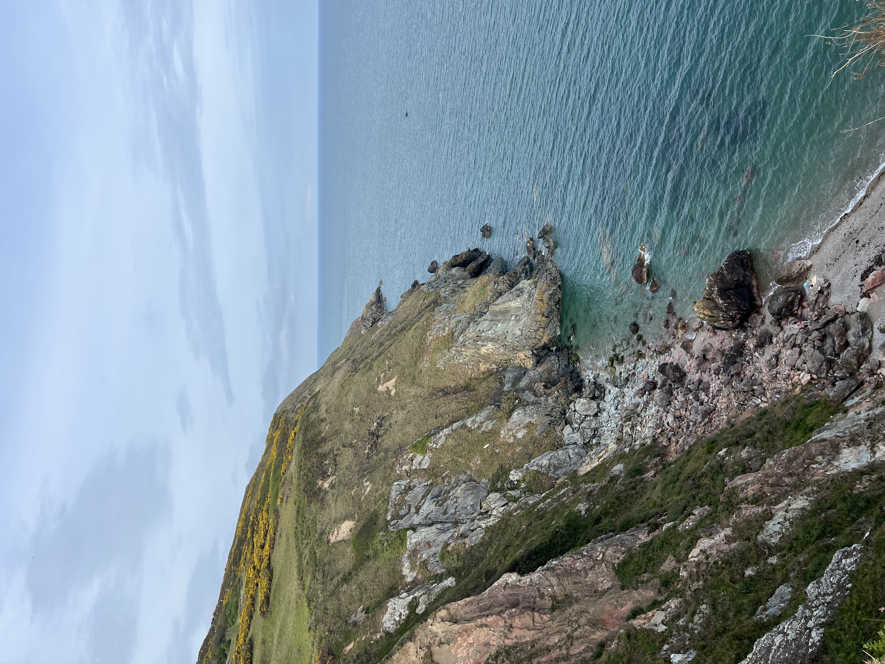
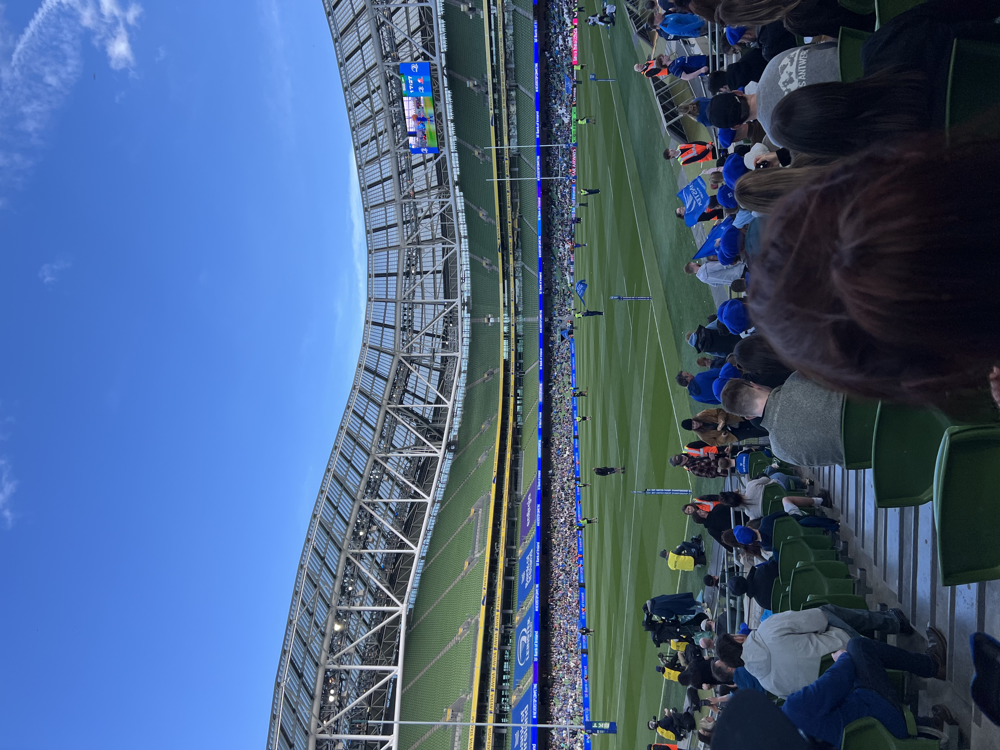

The Week in Nkwa's Words
"Grateful, yet eventful time exploring Ireland considering it is my first time in Europe."
Week's Itinerary
May 4 (Monday)
Land at Dublin Airport + Welcome Dinner
Touch down after the overnight flight. Welcome Dinner at The Brazen Head to conclude the night.
Travel
May 5 (Tuesday)
Dublin Bus Tour & Temple Bars
Toured the most visited places in all of Dublin. Stopped by one of the most iconic landmarks in Ireland.
Sightseeing
May 6 (Wednesday)
Grafton Street
Spent some time window shopping on Grafton Street majority of my day.
Shopping
May 7 (Thursday)
First Walk Around the Docklands
Participated in a tour of the Docklands for most of my afternoon.
Exploring
May 8 (Friday)
Howth
Headed up north to Howth (suburb outside Dublin) for a walk up the cliff.
Sightseeing
May 9 (Saturday)
Farmers Market + Rugby Championship
Stopped by the Farmers Market at St. Anne's Park and spent time with some of my roommates to watch the rugby championship at Aviva Stadium.
SportsPhotos from the Week


